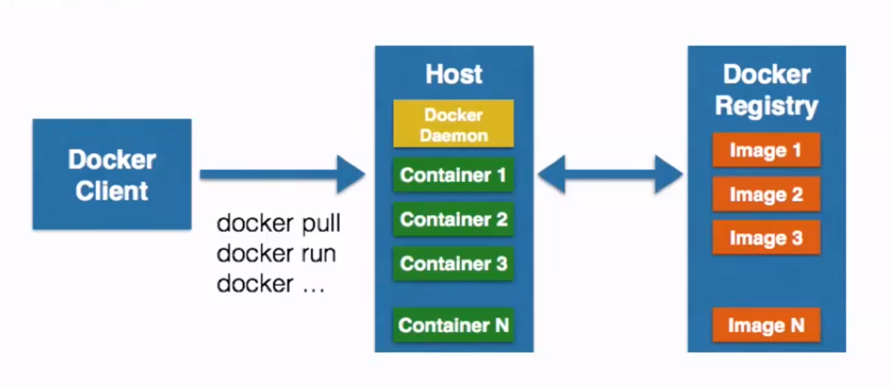
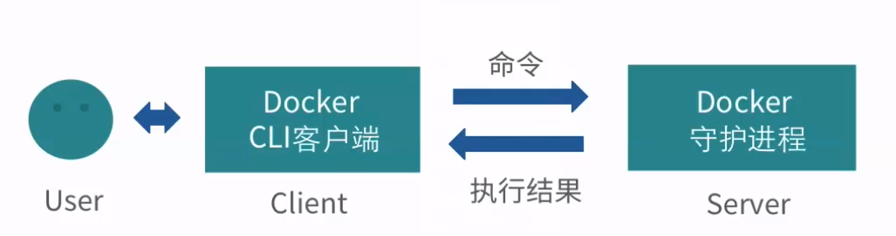
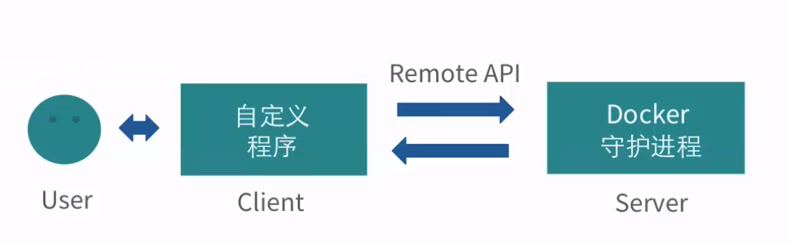
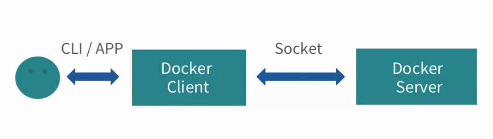
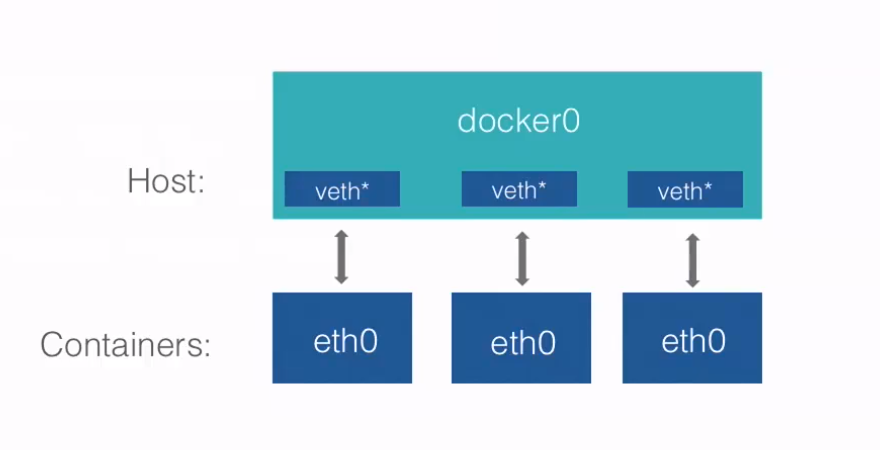
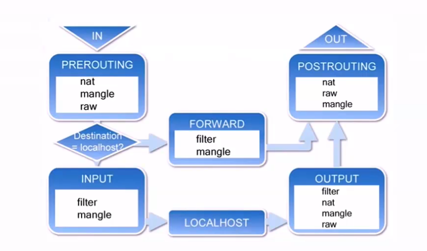
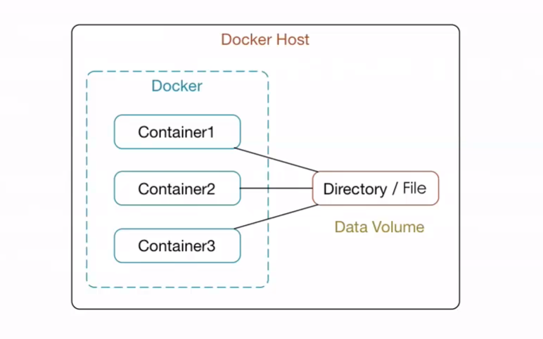
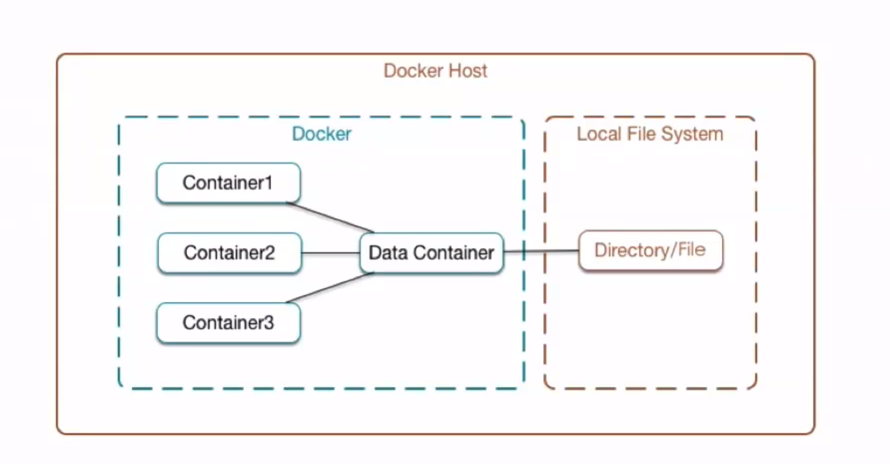
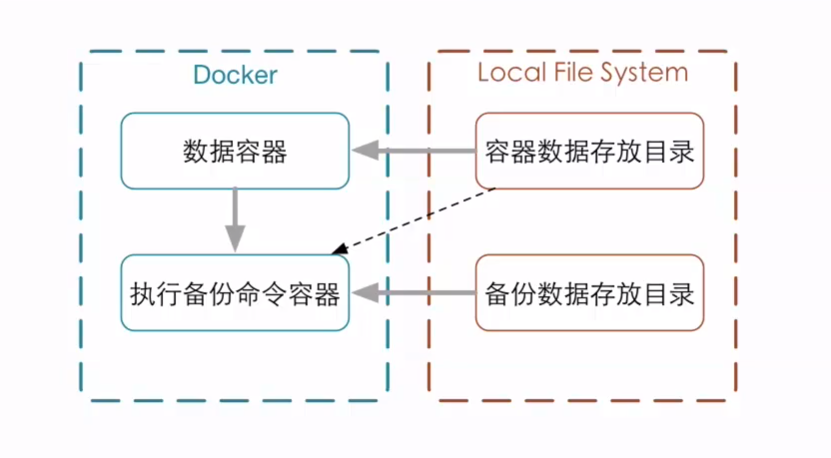
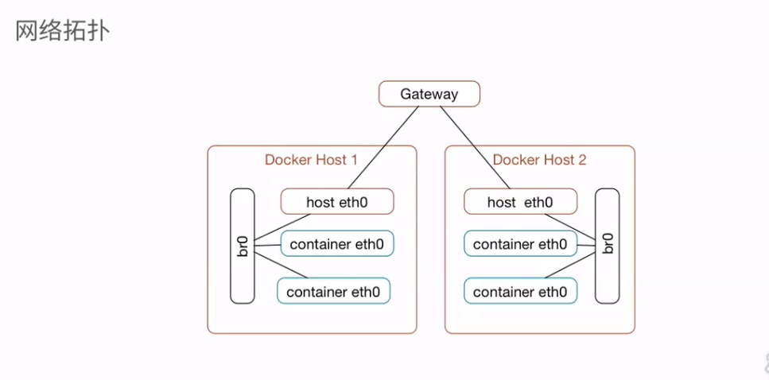

1、Docker基本组成
1.1、Docker Client 客户端
1.2、Docker Daemon 守护进程
客户端/守护进程
C/S模式
我们通过客户端发送命令给守护进程，守护进程执行结果返回给客户端1.3、Docker Image 镜像
容器的基石
层叠的只读文件系统1.4、Docker Container 容器
通过镜像启动1.5、Docker Registry 仓库
公有
私有1.6、示意图

2、Docker容器相关技术简介
2.1、Docker依赖的Linux内核特性
2.1.1、Namespaces命名空间
- 编程语言
封装 -> 代码隔离 - 操作系统
- 系统资源的隔离
- 进程、网络、文件系统...
- 分为5种命名空间：
PID(Process ID)进程隔离NET(Network)管理网络接口IPC(InterProcess Communication)管理跨进程通信的访问MNT(Mount)管理挂载点UTS(Unix Timesharing System)隔离内核和版本标识
- 编程语言
2.1.2、Control groups(cgroups)控制组
- 用来分配资源
- 资源限制
- 优先级设定
- 资源计量
- 资源控制
2.2、Docker容器的能力
- 文件系统隔离：每个容器都有自己的root文件系统
- 进程隔离：每个容器都运行在自己的进程环境中
- 网络隔离：容器间的虚拟网络接口和IP地址都是分开的
- 资源隔离和分组：使用cgroups将CPU和内存之类的资源独立分配给每个Docker容器
3、Docker客户端与守护进程
- 1、客户端与守护进程通信

- 2、Remote API与Docker守护进程进行通信 RESTful 风格API

- 3、连接方式
- unix://var/run/docker.sock(默认)
- tcp://host:port
- fd://sockerfd

4、Docker守护进程的配置和操作
1、查看守护进程
ps -ef | grep dockersudo docker stats查看docker的运行状态2、使用service命令管理
sudo service docker start/stop/restart3、Docker的启动选项
docker -d [OPTIONS]运行相关： -d： 以守护的形式运行 -D,--debug=false -e,--exec-driver="native" -g,--graph="/var/lib/docker" --icc=true -l,--log-level="info" --label=[] 标签区别，key-value形式：name=nzb -p,--pidfile="/var/run/docker.pid 服务器连接相关： -G,--group="docker" -H,--host=[] 启动选项，默认 -H unix://var/run/docker.sock --tls=false --tlscacert="/home/sven/.docker/ca.pem" --tlscert="/home/sven/.docker/cert.pem" --tlskey="/home/sven/.docker/key.pem" --tlsverify=false Remote API相关： --api-enable-cors=false 存储相关： -s,--storage-driver="" --selinux-enabled=false --storage-opt=[] Registry相关： --insecure-registry=[] --registry-mirror=[] 网络设置相关： -b,--bridge="" --bip="" --fixed-cidr="" --fixed-cidr-v6="" --dns=[] --dns-search=[] --ip=0.0.0.0 --ip-forward=true --ip-masq=true --iptables=true --ipv6=false --mtu=04、启动配置文件
/etc/default/docker
5、Docker的远程访问
1、环境准备
另一台安装Docker的服务器
--label name=server1/2修改Docker守护进程启动选项，区别服务器
-H tcp://0.0.0.0:2375
测试：curl http://host:2375/info保证Client API与Server API 版本一致
- 修改客户端配置
docker -H tcp:host:2375
或
使用环境变量DOCKER_HOSTexport DOCKER_HOST="tcp://host:2375"
测试：docker info - 如想访问本地的docker服务：
export DOCKER_HOST=""置空环境变量
- 修改客户端配置
如果docker开启了远程服务，如何访问本地：
修改启动选项-H，可以有多个：-H tcp://0.0.0.0:2375 -H unix://var/run/docker.sock
6、Docker容器
1、基本操作
1.1、启动容器
docker run IMAGE [COMMAND] [ARG]
例：docker run ubuntu echo 'Hello World'1.2、启动交互式容器
docker run -i -t IMAGE /bin/bash- -i
--interactive=true | false默认是false - -t
--tty=true | false默认是false
- -i
1.3、查看容器
docker ps [-a] [-l]- -a：列出使用容器
- -l：列出最新创建的容器
- 不指定参数则列出所有正在运行的容器
docker inspect 容器id或容器名字：查看容器详细信息
1.4、自定义容器名
docker run --name=自定义名 -i -t IMAGE /bin/bash1.5、重新启动停止的容器
docker start [-i] 容器名- -i：以交互的方式重新启动容器
1.6、删除停止的容器
docker rm 容器名
2、守护式容器
2.1、以守护形式运行容器
docker run -i -t IMAGE /bin/bashCtrl+PCtrl+Q组合键退出就会在后台运行2.2、附加到运行中的容器
docker attach 容器名或容器id2.3、启动守护式容器
docker run -d 镜像名 [COMMAND] [ARG...]- -d：启动时使用后台的方式启用
例：
docker run --name dc1 -d ubuntu /bin/sh -c "while true; do echo hello world; sleep 1; done"2.4、查看容器日志
docker logs [-f] [-t] [--tail] 容器名- -f
--follows=true | false默认是false 一直跟踪并放回结果 - -t
--timestamps=true | false默认是false 加上时间戳 --tail="all"返回结尾多少条的数据
- -f
2.5、查看容器内进程
docker top 容器名2.6、在运行中的容器内启动新进程
docker exec [-d] [-i] [-t] 容器名 [COMMAND] [ARG...]- 进入mysql容器：
docker exec -it 容器名 bash
- 进入mysql容器：
2.7、停止守护式容器
docker stop 容器名或docker kill 容器名
7、容器中部署静态网站
7.1、设置容器的端口映射
run [-P] [-p]-P,--publish-all=true | false 默认是false 将为容器暴露的所有端口进行映射 例： docker run -P -i -t ubuntu /bin/bash -p,--pulish=[] 指定映射哪些容器的端口 四种方式： containerPort docker run -p 80 -i -t ubuntu /bin/bash 随机映射 hostPort:containerPort docker run -p 8080:80 -i -t ubuntu /bin/bash ip:containerPort docker run -p 0.0.0.0:80 -i -t ubuntu /bin/bash ip:hostPort:containerPort docker run -p 0.0.0.0:8080:80 -i -t ubuntu /bin/bash7.2、部署流程
- 创建映射80端口的交互式容器
- 安装Nginx
- 安装文本编辑器vim
- 创建静态文件
- 修改Nginx配置文件
- 运行Nginx
- 验证网站访问
8、查看和删除镜像
1、镜像的存储地址
docker info 查看镜像的存储地址2、列出镜像
docker images [OPTIONS] [REPOSITORY]- -a,
--all=false显示所有镜像，包括中间层镜像 - -f,
-filter --no-trunc=falseid截断- -q,
--quiet=false只显示镜像的唯一ID
REPOSITORY仓库是包含一系列的镜像，而REGISTRY仓库包含很多REPOSITORY仓库TAG
例如：
ubuntu:14.04
ubuntu:latest
- -a,
3、查看镜像
docker inspect [OPTIONS] CONTAINER|IMAGE [CONTAINER|IMAGE...]- -f,
--format=""
- -f,
4、删除镜像
docker rmi [OPTIONS] IMAGE [IMAGE...]- -f,
--force=false强制删除镜像 ---no-prune=false不会删除未打标签的镜像- 例：
docker rmi $(docker images -q ubuntu) 删除所有Ubuntu仓库中的所有镜像
- 例：
- -f,
9、获取和推送镜像
1、查找镜像
1.1、Docker Hub
https://registry.hub.docker.com1.2、
docker search [OPTIONS] TERM- --automated=false 是否是自动构建的镜像
- --no-trunc=false
- -s,
--stars=0 - 最多返回25个结果
2、拉取镜像
docker pull [OPTIONS] NAME[:TAG]- -a,
--all-tags=false下载带有标签的的仓库的所有镜像- 使用
--registry-mirror选项加速拉取镜像速度- 修改：etc/default/docker
- 添加：
DOCKER_OPTS="--registry-mirror=http://MIRROR-ADDR"例：https://www.daocloud.io 注册获取加速地址
- 使用
- -a,
3、推送镜像
docker push NAME[:TAG]- NAME:仓库名
- TAG:标签名
10、构建镜像
1、
docker commit通过容器构建docker commit [OPTIONS] CONTAINER [REPOSITORY[:TAG]]CONTAINER容器名- -a,
--author="" - -m,
--message="" - -p,
--pause=true构建镜像时不暂停运行的容器
2、
docker build通过Dockerfile文件构建例： #First Dockerfile From ubuntu:14.04 MAINTAINER dormancypress "dormancypress@outlook.com" RUN apt-get update RUN apt-get install -y nginx EXPOSE 80docker build [OPTIONS] PATH | URL | -- --force-rm=false
- --no-cache=false 不使用缓存
- --pull=false
- -q,
--quite=false不显示构建过程 - --rm=true
- -t,
--tag=""指定构建的镜像的名字 PATH | URL构建镜像的路径，可以使用“.”表示当前文件夹
11、Dockerfile指令
1、指令格式
# Comment注释INSTRUCTION argument指令
2、指令
2.1、
FROMFROM <image>FROM <image>:<tag>
已经存在的镜像
基础镜像
必须是第一条非注释指令
2.2、
MAINTAINERMAINTAINER <name>指定镜像的作者信息，包含镜像的所有者和联系信息相当于前面的commit命令的-a选项
2.3、
RUN指定当前镜像中运行的命令(镜像构建时运行的)-RUN <command>(shell模式)/bin/sh -c command例： RUN echo hello-RUN ["executable","param1","param2"](exec模式)例： RUN ["/bin/bash","-c","echo hello"]
2.4、
EXPOSEEXPOSE <port>[<port>...]指定运行该镜像的容器使用的端口（只是告诉容器使用的端口）- 为了安全起见，run命令中还要指定端口
docker run -p 80 -d dormancypress/df_test1 nginx -g "daemon off;"
- 为了安全起见，run命令中还要指定端口
2.5、
CMD
容器运行时运行的指令，会被docker run命令中的指令覆盖CMD ["executable","param1","param2"](exec模式)CMD command param1 param2(shell模式)CMD ["param1","param2"](作为ENTERYPOINT指令的默认参数)
例：CMD ["/usr/sbin/nginx", "-g", "daemon off;"]
2.6、
ENTERYPOINT容器运行时运行的指令，不会被docker run 命令中的指令覆盖ENTERYPOINT ["executable","param1","param2"](exec模式)ENTERYPOINT command param1 param2(shell模式)
2.7、
ADDADD <src>...<dest>ADD ["<src>"..."<dest>"](适用于文件路径中有空格的情况)
2.8、
COPYCOPY <src>...<dest>COPY ["<src>"..."<dest>"](适用于文件路径中有空格的情况)ADD vs COPYADD包含类型tar的解压功能- 如果当纯复制文件，Docker推荐使用COPY
2.9、
VOLUME添加容器卷VOLUME ["/data"]2.10、
WORKDIRWORKDIR /path/to/workdir一般不使用绝对路径，如果使用相对路径，会一直传递下去
2.11、
ENV设置环境变量与WORKDIR类似ENV <key><value>ENV <key>=<value>
2.12、
USER指定镜像会以什么用户来运行2.13、
ONBUILD- 镜像触发器
- 当一个镜像被其他镜像作为基础镜像时执行
- 会在构建过程中插入指令
12、构建过程
1、构建过程
- 从基础镜像运行一个容器
- 执行一条指令，对容器做出修改
- 执行类似
docker commit的操作，提交一个新的镜像层 - 在基于刚提交的镜像运行一个新容器
执行Dockerfile中的下一条指令，直至所有指令执行完毕
ps:构建中会删除中间层容器，而不会删除中间层镜像，所以可以使用中间层镜像进行调试，查找错误
2、镜像缓存
- 构建缓存: 构建一次后再构建就会使用构建缓存
- 不使用缓存
- 使用--no-cache选项
- 或
- ENV REFRESH_DATE 2019-4-7
3、查看镜像构建的过程
docker history [image]
- --no-trunc: 不截断输出完整信息
13、容器的网络连接
1、Docker容器的网络基础
- Linux虚拟网桥特点：
- 可设置IP地址
- 相当于拥有一个隐藏的虚拟网卡
docker0的地址划分：
- IP：
172.17.42.1子网掩码：255.255.0.0 MAC:02:42:ac:11:00:00到02:42:11:ff:ff- 总共提供了65534个地址
- IP：
需要使用网桥管理工具：
sudo apt-get install bridge-utils- 查看网桥：
sudo brctl show - 添加虚拟网桥：
sudo brctl add br0 修改地址：
sudo ifconfig docker0 192.168.200.1 netmask 255.255.255.0修改docker0地址：
sudo ifconfig docker0 192.168.200.1 netmask 255.255.255.0更改docker守护进程的启动配置
/etc/default/docker中添加DOCKER_OPS值DOCKER_OPS="-b=br0"
- Linux虚拟网桥特点：

2、Docker容器的互联
2.1、运行所有容器互联（默认） 因为每次关闭重启容器IP地址都会改变所有使用
--link选项可以使新启动的容器为其起别名，就不用担心IP改变- --link
docker run --link=[CONTAINER_NAME]:[ALIAS] [IMAGE] [COMMAND]
- --link
2.2、拒绝容器间的互联
- --icc=false
2.3、允许特点容器间的连接
- --icc=false
- --iptables=true
- --link
3、Docker容器与外部网络的连接
3.1、
ip-forward--ip-forward=true(默认)允许数据转发- 查看ip_forward的值：
sysctl net.ipv4.conf.all.forwarding
3.2、
iptables什么是iptables:
- Iptables是Linux内核集成的包过滤防火墙系统，几乎所有的Linux发行版本都会包含IPtables的功能。
- 表(table):下图中的nat、mangle、raw、filter...
- 链(chain):代表数据处理的不同环节
- 规则(rule):每个链下的操作
- ACCEPT、REJECT、DROP
filter表中包含的链：
- INPUT
- FORWARD
- OUTPUT
查看iptables：
sudo iptables [-t filter] -L -n- -t:指定表名（默认）

- -t:指定表名（默认）
3.3、允许特定IP访问容器
sudo iptables -I DOCKER -s 禁止访问ip -d 目的ip -p TCP --dport 80 -j ACCEPT3.4、限制IP访问容器
sudo iptables -I DOCKER -s 禁止访问ip -d 目的ip -p TCP --dport 80 -j DROP
14、Docker容器的数据卷
什么是数据卷：
数据卷是经过特殊设计的目录，可以绕过联合文件系统（UFS）,为一个或多个容器提供访问。
数据卷设计的目的，在于设计的永久化，他完全独立于容器的生存周期，因此，Docker不会再容器删除时删除其挂载的数据卷， 也不会存在类似的垃圾收集机制，对容器引用的数据卷进行处理。

1、为容器添加数据卷
docker run -v ~/container_data:/data -it ubuntu /bin/bash~/container_data： 本机目录/data： 容器目录
2、为数据卷添加访问权限
docker run -v ~/container_data:/data:ro -it ubuntu /bin/bashro: 只读
3、使用
Dockerfile构建包含数据卷的镜像 Dockerfile指令VOLUME["/data"]但是，利用这个镜像创建的容器构建的数据卷都是不一样的，则不能实现共享。
15、Docker的数据卷容器

1、挂载数据卷容器的方法
docker run --volumes-from [CONTAINER NAME]即时删除了数据卷容器，挂载了这个数据卷容器的容器还是能正常使用。因为只要一个数据卷还在被使用就不会被删除。
16、Docker数据卷的备份和还原
1、数据备份方法
docker run --volumes-from [container name] -v $(pwd):/backup:wr ubuntu tar -cvf /backup/backup.tar [container data volume]$(pwd):备份文件存储的目录/backup：容器中的目录wr：读写（默认）[container data volume]：需要压缩的数据卷目录tar -cvf/backup/backup.tar [container data volume]：备份操作（压缩）
2、数据还原方法
docker run --volumes-from [container name] -v $(pwd):/backup:wr ubuntu tar -xvf /backup/backup.tar [container data volume]

17、Docker容器的跨主机连接

1、使用网桥实现跨主机容器连接
1.1、环境准备
- Mac OS X + Parallels
- 两台Ubuntu14.04虚拟机
- 安装网桥管理工具：
apt-get install bridge-utils - ip地址：
- Host1:10.211.55.3
- Host2:10.211.55.5
修改
/etc/network/interfaces文件auto bro iface bro inet static address 10.211.55.3 netmask 255.255.255.0 geteway 10.211.55.1 bridge_ports eth0Docker设置
- 修改
/etc/default/docker文件- -b指定使用自定义网桥
- -b=br0
- --fixed-cidr限制ip地址分配范围
- IP地址划分：
- Host1:10.211.55.64/26
- 地址范围：10.211.55.65~10.211.55.126
- Host2:10.211.55.128/26
- 地址范围：10.211.55.129~10.211.55.190
- -b指定使用自定义网桥
- 修改
2、使用Open vSwitch实现跨主机容器连接
- 3、使用Weave实现跨主机容器连接
Docker 磁盘空间占用和清理
磁盘空间占用
Docker 的内置 CLI 指令docker system df，可用于查询镜像（Images）、容器（Containers）和本地卷（Local Volumes）等空间使用大户的空间占用情况。
[root@dockercon ~]# docker images
REPOSITORY TAG IMAGE ID CREATED SIZE
kalilinux/kali-linux-docker latest c927a54ec8a4 8 days ago 1.88GB
nginx latest 3f8a4339aadd 9 days ago 108MB
busybox latest 6ad733544a63 2 months ago 1.13MB
[root@dockercon ~]# docker system df
TYPE TOTAL ACTIVE SIZE RECLAIMABLE
Images 3 0 1.994GB 1.994GB (100%)
Containers 0 0 0B 0B
Local Volumes 0 0 0B 0B
Build Cache 0B 0B
可以进一步通过-v参数查看空间占用细节
[root@dockercon ~]# docker system df -v
#镜像空间使用情况
Images space usage:
REPOSITORY TAG IMAGE ID CREATED ago SIZE SHARED SIZE UNIQUE SiZE CONTAINERS
kalilinux/kali-linux-docker latest c927a54ec8a4 8 days ago ago 1.884GB 0B 1.884GB 0
nginx latest 3f8a4339aadd 9 days ago ago 108.5MB 0B 108.5MB 0
busybox latest 6ad733544a63 2 months ago ago 1.129MB 0B 1.129MB 0
#容器空间使用情况
Containers space usage:
CONTAINER ID IMAGE COMMAND LOCAL VOLUMES SIZE CREATED ago STATUS NAMES
#本地卷使用情况
Local Volumes space usage:
VOLUME NAME LINKS SIZE
Build cache usage: 0B
空间清理
| 不同状态 | 已使用镜像（used image） | 未引用镜像（unreferenced image） | 悬空镜像（dangling image） |
|---|---|---|---|
| 镜像含义 | 指所有已被容器（包括已停止的）关联的镜像 | 没有被分配或使用在容器中的镜像 | 未配置任何 Tag （也就无法被引用）的镜像 |
Docker内置自动清理
通过 Docker 内置的 CLI 指令docker system prune来进行自动空间清理。
[root@dockercon ~]# docker system prune --help
Usage: docker system prune [OPTIONS]
Remove unused data
Options:
-a, --all Remove all unused images not just dangling ones
--filter filter Provide filter values (e.g. 'label=<key>=<value>')
-f, --force Do not prompt for confirmation
--volumes Prune volumes
docker system prune自动清理说明- 该指令默认会清除所有如下资源：
- 已停止的容器（container）
- 未被任何容器所使用的卷（volume）
- 未被任何容器所关联的网络（network）
- 所有悬空镜像（image）。
该指令默认只会清除悬空镜像，未被使用的镜像不会被删除。添加-a 或 --all参数后，可以一并清除所有未使用的镜像和悬空镜像。
可以添加-f 或 --force参数用以忽略相关告警确认信息。
[root@dockercon ~]# docker system prune --help Usage: docker system prune [OPTIONS] Remove unused data Options: -a, --all Remove all unused images not just dangling ones --filter filter Provide filter values (e.g. 'label=<key>=<value>') -f, --force Do not prompt for confirmation --volumes Prune volumes [root@dockercon ~]# docker system prune --all WARNING! This will remove: - all stopped containers - all networks not used by at least one container - all images without at least one container associated to them - all build cache Are you sure you want to continue? [y/N] y Deleted Containers: f095899e7343e160d5b32d0688a6561a1a7f6af91c42ffe966649240b58ca23f Deleted Images: untagged: busybox:latest untagged: busybox@sha256:e3789c406237e25d6139035a17981be5f1ccdae9c392d1623a02d31621a12bcc deleted: sha256:6ad733544a6317992a6fac4eb19fe1df577d4dec7529efec28a5bd0edad0fd30 deleted: sha256:0271b8eebde3fa9a6126b1f2335e170f902731ab4942f9f1914e77016540c7bb untagged: kalilinux/kali-linux-docker:latest untagged: kalilinux/kali-linux-docker@sha256:28ff9e4bf40f7399e0570394a2d3d388a7b60c748be1b0a180c14c87afad1968 deleted: sha256:c927a54ec8a46164d7046b2a6dc09b2fce52b3066317d50cf73d14fa9778ca48 untagged: alpine:latest untagged: alpine@sha256:ccba511b1d6b5f1d83825a94f9d5b05528db456d9cf14a1ea1db892c939cda64 untagged: alpine-io:latest Total reclaimed space: 5.219GB
- 该指令默认会清除所有如下资源：